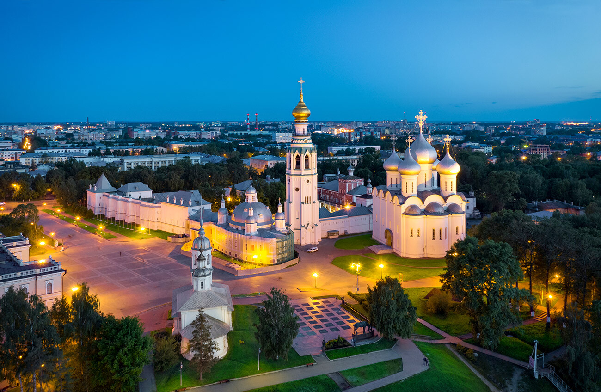

2 ПОЛЯ В ПЛАНЕ
ВИТЯЗЬ
ул. Гагарина, 44А, стр. 2
Основная площадка заявки. Планируем разместить два игровых поля. В комплексе — раздевалки с душевыми, трибуны и места для работы СМИ.
На карте ↗Чемпионат России
по алтимату
Три дня большой игры.
Город, который будет болеть с нами.
В юбилейный год Вологды привезём большой алтимат на стадионы, в прямой эфир и на городские афиши.
В центре заявки — сильный спортивный турнир и внимание к нему за пределами нашего сообщества. Пригласим зрителей через спортшколы, представим чемпионат в местных СМИ и подключим городские заведения.
Начнём со стадионов ↓Три городские площадки.
От первых матчей до финального очка.
ул. Гагарина, 44А, стр. 2
Основная площадка заявки. Планируем разместить два игровых поля. В комплексе — раздевалки с душевыми, трибуны и места для работы СМИ.
На карте ↗ул. Пушкинская, 43
Стадион с искусственным газоном, освещением и зрительскими трибунами. Здесь есть пространство для большой игры и её болельщиков.
На карте ↗ул. Зосимовская, 5
Университетский стадион после реконструкции. Ещё одна площадка чемпионата: планируем разместить здесь одно игровое поле.
На карте ↗Две параллельные трансляции в первые дни.
Пять камер — на главные матчи.
Четыре камеры суммарно. По одной двухкамерной трансляции с каждого из двух стадионов.
Всё внимание — решающим матчам.
Готовим пятикамерную съёмку под Матч ТВ.
Первый игровой день. Команды выходят на поля, стартуют трансляции с двух стадионов.
СТАРТ ЧЕМПИОНАТА ↗Второй игровой день. Продолжаем спортивную программу и два параллельных прямых эфира.
БОРЬБА ПРОДОЛЖАЕТСЯ ↗Решающие матчи, финалы открытого и женского дивизионов, награждение. Главный эфир — в пять камер.
ФИНАЛЫ И НАГРАЖДЕНИЕ ↗
ВОЛОГДА / ГОРОД ХОЗЯЕВПроведение чемпионата поддерживают мэр Вологды и губернатор Вологодской области.
Объединяем городские возможности вокруг чемпионата: спортивные площадки, местные СМИ, спортшколы и заведения. Чтобы о турнире знали, на него приходили и о нём говорили после финала.
В 2027 году Вологда отмечает 880-летие. Предлагаем сделать чемпионат России одним из ярких спортивных событий юбилейного года.
Город готовится встречать гостей, обновляет общественные пространства и собирает большую событийную программу. Для алтимата это возможность выйти к новой аудитории и стать частью истории, о которой будет говорить вся Вологда.
Расскажем о чемпионате там,
где город читает, смотрит и слушает.
Пригласим воспитанников футбольных, баскетбольных и волейбольных школ вместе с тренерами и родителями. У местной команды есть прямые контакты во всех трёх направлениях.
Представим чемпионат на местном ТВ, радио и в городских изданиях. До турнира — знакомство с алтиматом и приглашение на трибуны. Во время — репортажи. После — герои и результаты.
Наш медиаплан ↓Подключим рекламу в соцсетях, спортивные сообщества и аудитории местных заведений. Соберём афишу с понятным ответом: когда прийти, где смотреть и за кого болеть.
Анонсы, интервью с организаторами, приглашения на финалы и репортажи с чемпионата — в программе работы с редакциями.
Поездом или самолётом.
В том числе через Череповец.
Ориентиры на одного человека в одну сторону по предложениям ноября 2026 года. Это не тарифы на август 2027: стоимость и расписание на даты чемпионата обновим после открытия продаж. Наземный переезд из Череповца оплачивается отдельно.
У местной команды есть свои люди в городских барах и ресторанах. Подключим их к чемпионату.
Встречи команд после игр, общение и вечерняя программа.
Афиши, публикации и приглашения на матчи через заведения и их сообщества.
Исторический центр, набережная и прогулка между большой игрой и вечерними встречами.
Подборка гостиниц, вариантов размещения и питания появится здесь вместе с условиями для участников. Этот раздел дополним конкретными адресами и ценами.
последних чемпионатов России
в опыте руководителя проекта
Общее руководство и взаимодействие с федерацией.
Стадионы, городские партнёры и работа на месте.
Прямые эфиры, работа со СМИ и продвижение.